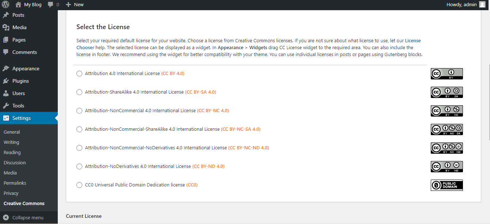
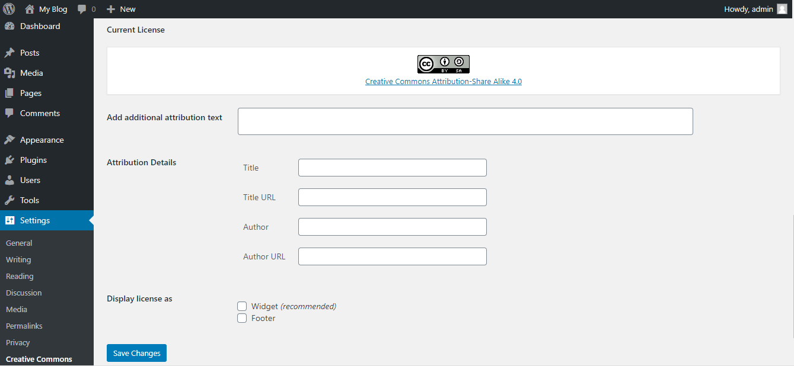
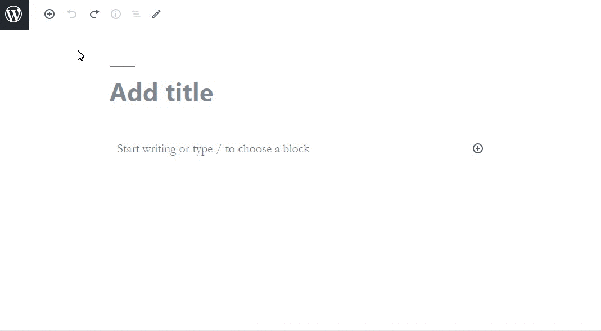
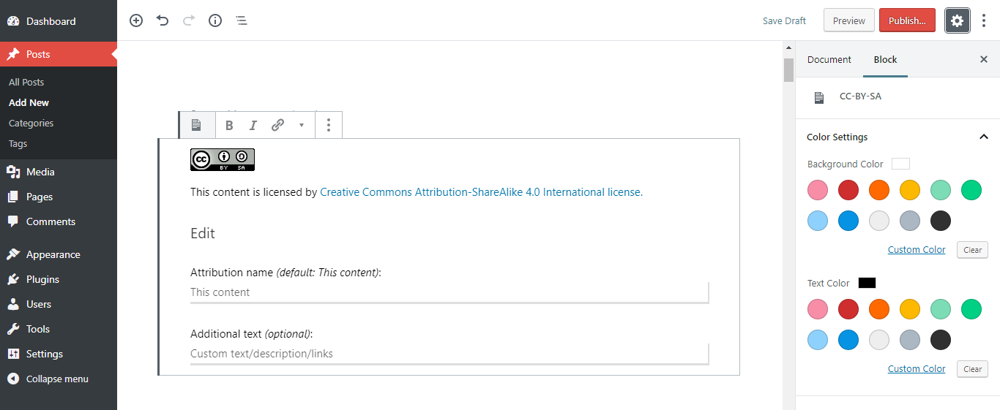
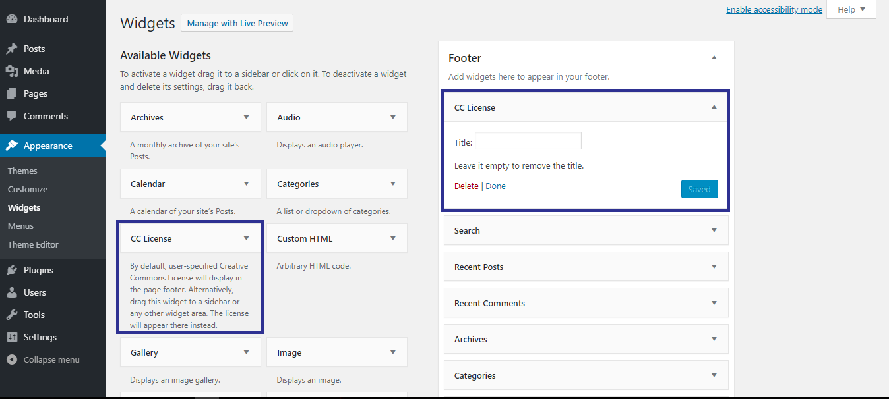
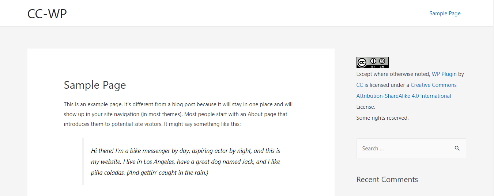

General information
Version: 2020.04.1WordPress Version Required: 3.1 or higher
Created by: Ahmad Bilal , Bjorn Wijers , Tarmo Toikkanen , Matt Lee , Rob Myers , Timid Robot Zehta
Download: Download from WordPress Repository
Need Help ? Submit issue on our GitHub repo
Install Plugin
Thank you so much for Downloading our Plugin Creative Commons. Please feel free to contact us if you have questions or problems about this plugin.
Install from FTP Upload:
-
- Download the "creative-commons.2020.04.1.zip" from official Wordpress Repo
- Unzip the "creative-commons.2020.04.1.zip" file
- Open up your FTP manager and connect to your hosting
- Browse to wp-content/plugins
- Upload the Creative Commons in plugins folder
- Log Into WordPress and go to Plugins > Installed Plugins
- Find the Creative Commons Plugin and click activate
WordPress Repository Download:
-
- Log into your WordPress backend
- Navigate to Plugins > Add New
- Search Creative Commons on search bar
- Click Install Now
- After complete installation click on active button to active The plugin.
Installation Screencast
If you are experiencing any issues during the installation I would recommend to check out this

Description
The Creative Commons WordPress plugin gives authors the ability to license content with a Creative Commons license (Choose a License). With this plugin you can:
- License your blog (single WordPress install)
- Display license for the site, posts and pages
- Prevent license changes per site (all pages on a site must use the same license)s
- License your WordPress Network (WordPress Multisite install)
- License some of your sites differently in your WordPress Network
- Prevent license changes in your WordPress Network (all pages on all sites need to use the same license)
- License all your content with the same license (license per author)
- License some posts, pages, or images differently from your default license (per content license)
- License posts and pages by simply including CC Gutenberg blocks for each license required (Gutenberg License Blocks)
- Display license information with “One Click Attribution” for images
The default license for the site used by the plugin is the Creative Commons Attribution-ShareAlike (CC BY-SA) license. This can be easily changed including attribution, depending on the permissions by a user with the role: superadmin, site admin or author.Selecting a license is straight forward. If you are not sure about what license to use, you can use the linked license chooser.
Creative Commons License
The selected license can be displayed as a widget or a footer or both at the same time. In Appearance > Widgets, the CC License widget can be dragged to any widget area like the side-bar and all other available areas. You can also include the license in footer. We recommend using the widget for better compatibility with your theme. You can use individual licenses in posts or pages using Gutenberg blocks.
Selcet License
You can select approprite license for your product.
Modify as your need
Navigate to Settings > Creative Commons
Using Gutenberg blocks
The plugin adds specific Gutenberg blocks for each Creative Commons license. If you are using the default Gutenberg editor, you will find these blocks under a separate category.
These blocks can be used to license any page/post/image or other media.
Widget
There are two options to display the default license, as a widget or in the footer. We recommend using the widget for better theme compatibility.
After selecting the widget go to Appearance > Widgets and drag the CC License Widget to the required area. The widget will then display the default license on all pages of the site.
Contributing
Contributions will be very appreciated. See CONTRIBUTING.md.
License
license.txt (GPLv2 or later License)